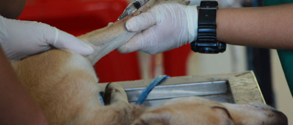
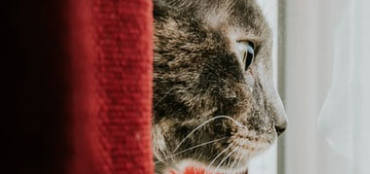
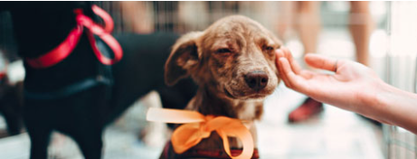

Programa de esterilización de bajo costo
Gracias a diferentes convenios se puede realizar jornadas de esterilización
a bajo costo dirigidas a población de pocos recursos con mascotas.
En estos eventos se operan tanto a perros como gatos, hembras y machos.
El costo de la cirugía varía según el peso del animal.
Programa de voluntariado
Estamos extremadamente agradecidos con todas y cada una de las personas dispuestas
a ofrecer su tiempo como voluntarios o colaboradores en tantas capacidades diferentes,
hemos simplificado nuestro programa para que sea más eficiente y, en última instancia,
ayude a los animales y la comunidad de manera más efectiva.

Programa de hogar temporal
HOPE no cuenta con un albergue, sino con hogares que acogen rescatados en forma temporal.
Puedes ayudar ofreciendo tu hogar para aquellos que aún no encuentran a su familia definitiva.
Tendrás un peludo para darle amor y cuidados mientras se promueve su adopción y
encuentre un hogar definitivo.
¿Te animas con esta gran tarea?

Denuncias de maltrato
Sé la voz de los que no tienen voz; en todos nosotros está la responsabilidad de proteger
y defender a los animales frente a cualquier amenaza, por ello HOPE pensando
en su bienestar y en que el acto no se pase por alto, realiza denuncias y brinda asesoría
en caso de conocer alguna situación de maltrato animal.
UNIDOS CONTRA EL MALTRATO ANIMAL